Rocket Equation Simulator
The aim of this project was to simulate the rocket equation as a function of time. It was coded in python. The graphs above depict certain aspects of the simulation over time. For example, the velocity graph shows the velocity of the rocket during its flight. You can see that it reaches its maximum positive velocity at around 70 seconds into the flight. This is when the rocket is out of fuel, and the gravity of the planet is slowing it down. This can also be seen at the acceleration graph when it drops into the negative and effectively decelerates the rocket. After the rocket is out of fuel, its velocity steadily decreases into the negative as it falls back to the planet.
Below you can see an example code snippet which is used to calculate the air density at the current height of the rocket. This is required in order to calculate drag, which is used in the calculations for the other variables depicted in the chart. Drag is only calculated while the rocket is in the atmosphere. Hence once the rocket leaves, the drag drops to 0 as it is now in a vacuum. Some variables that were not taken into account are the drag coefficient, which in turn requires me to experimentally calculate the reynolds number. This was however not possible as it is very complex and I did not have the required variables.
If you are interested in the code you can visit the repository here.
def get_air_density_old(current_height):
if current_height < kerbin_atm_cutoff:
temp_at_alt = sea_level_temp - temp_lapse_rate*current_height # calcs temp at altitude
pressure_at_alt = sea_level_pressure*(1 - (temp_lapse_rate*current_height)/sea_level_temp)**((grav_accel*molar_mass_air)/(gas_constant*temp_lapse_rate)) #calcs pressure at altitude
return (pressure_at_alt*molar_mass_air) / (gas_constant*temp_at_alt)
else:
return 0